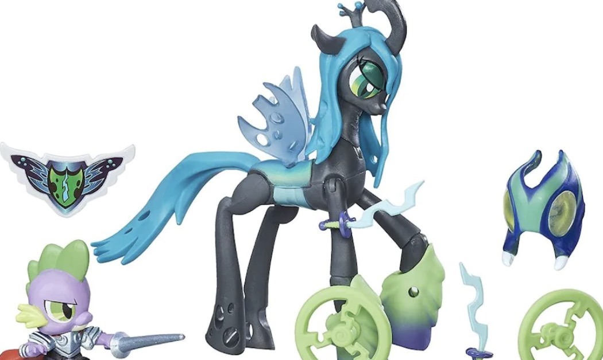

Skip to content
Skip to main navigation
Skip to footer
yijingpan@foxmail.com ｜ huangchengadam@gmail.com

Yijing Pan & Cheng Huang
Queen Chrysalis
Turn on the light
Turn off the light
Temperature & Humidity Data
LED status:
{{led}}
Temperature is:
{{temperature}}
Humidity is :
{{ humidity }}